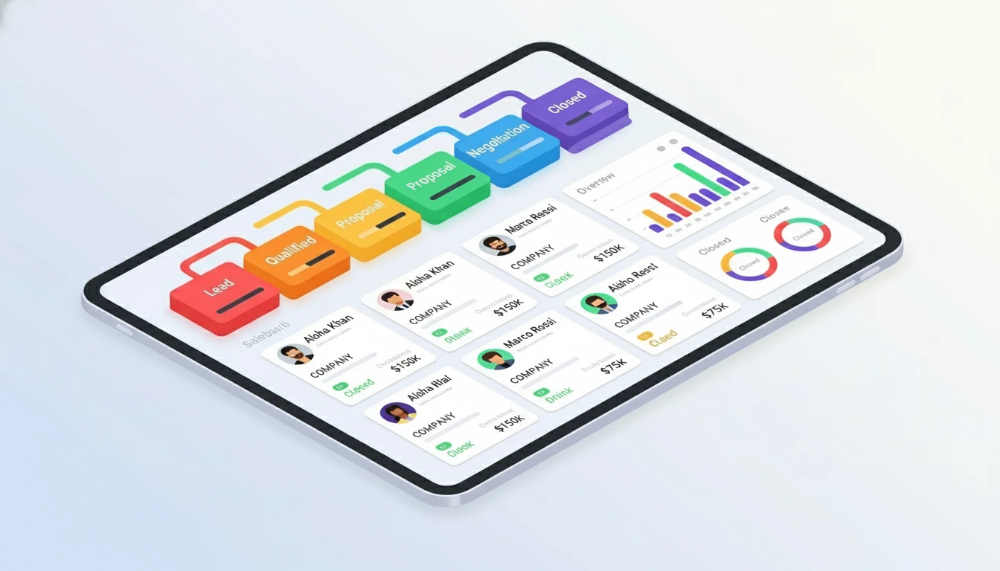

How to Use a CRM for Sales: 5 Best Practices That Work (2025)

A CRM isn't just a contact database. Used correctly, it's your sales command center. Here's how to use it effectively.
1. Input and Organize Data Consistently
The rule: If it's not in the CRM, it doesn't exist.
What to Track:
- Contact details: Name, email, phone, company, job title
- Deal information: Deal value, expected close date, products/services
- Custom fields: Industry, company size, pain points, lead source
Best Practices:
- Use consistent naming conventions (e.g., "John Smith" not "john smith" or "Smith, John")
- Fill out ALL required fields—no shortcuts
- Update records immediately after interactions (don't wait until end of day)
- Remove duplicates weekly
2. Track Every Customer Interaction
Why it matters: Complete history = better follow-ups. If you switch accounts or someone else takes over a deal, they need context.
What to Log:
- Phone calls (date, time, outcome, next steps)
- Emails (most CRMs auto-log if you integrate)
- Meetings (agenda, attendees, decisions made)
- Notes from conversations
Time-Saving Tip:
Use templates for common interactions. Example: "Initial discovery call—discussed [pain points], next step: send proposal by [date]."
3. Manage Your Sales Pipeline Visually
Your pipeline shows: Where deals are, what's stuck, what's closing soon.
Standard Sales Stages:
- Lead: New contact, not qualified yet
- Qualified: Budget confirmed, decision-maker identified
- Proposal: Quote/proposal sent
- Negotiation: Discussing terms
- Closed-Won: Deal signed
- Closed-Lost: Deal lost (track why!)
Pipeline Management Rules:
- Move deals forward weekly (or they're stuck)
- If a deal hasn't moved in 30 days, call the prospect or mark it "Closed-Lost"
- Focus on deals in "Proposal" and "Negotiation"?these close fastest
4. Automate Routine Tasks
Stop wasting time on repetitive work. Automate it.
What to Automate:
- Follow-up emails: "Thanks for the call" templates
- Reminders: Call back in 3 days, send proposal by Friday
- Lead assignment: New leads auto-assigned to reps based on territory
- Activity logging: Auto-log emails and calendar events
- Deal stage changes: Trigger tasks when a deal moves (e.g., "Send contract when deal reaches Negotiation")
Example Workflow:
Trigger: Deal moves to "Proposal"
Actions: Send proposal template ? Set reminder to follow up in 3 days ? Notify
sales manager
5. Generate Reports and Track Performance
Data is useless if you don't analyze it.
Essential Reports for Sales Reps:
- My open deals: What's in my pipeline right now?
- Deals closing this month: Am I hitting quota?
- Activity report: How many calls/emails did I send this week?
- Win/loss analysis: Why am I losing deals?
Metrics to Track:
- Conversion rate: Leads ? Qualified ? Closed
- Average deal size: Are you upselling?
- Sales cycle length: How long from first contact to close?
- Activities per deal: How many touches to close?
Review weekly. Adjust based on what the data tells you.
Bonus: CRM Habits That Separate Top Performers
- Start each day in your CRM: Review today's tasks and follow-ups
- End each day in your CRM: Log all activities before leaving
- Block "CRM time": 30 minutes daily to update records and review pipeline
- Use mobile app: Update on-the-go after calls and meetings
Conclusion
A CRM only works if you use it consistently. Make it your single source of truth—track everything, automate what you can, and review data weekly. Do this for 30 days and you'll never go back to spreadsheets.
Need help choosing a CRM? Read What is a CRM? first.